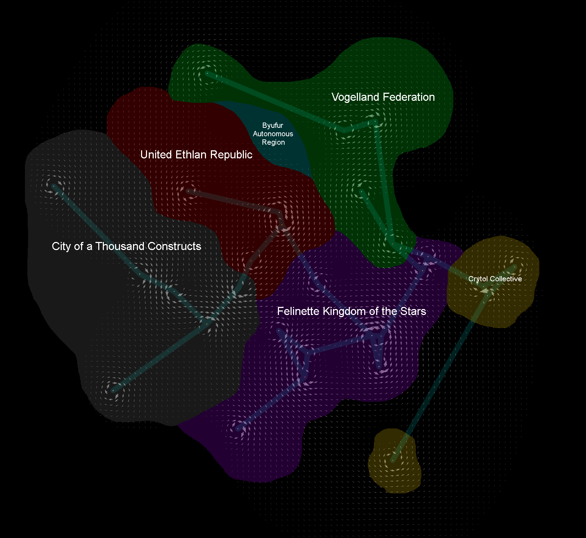

Rukize is home to three recognized interstellar nations and six recognized regions.
The Byufur Autonomous Region is an occupied region between the United Ethlan Republic and the Vogelland Federation. It does not have any celestial bodies within its borders.
The BAR is an alliance between major criminal organizations in the United Ethlan Republic and the Vogelland Federation. It has no central leadership and relies on the mutual support of its member groups to defend its borders. In exchange, its members may conduct otherwise illegal activities within the region.
The BAR imports nearly all of its resources, many of which are obtained from illegal activities occurring outside of its borders. The resources it does produce are all vegetation grown using hydroponics.
The BAR is the most culturally diverse region in Rukize. Its population is 37% kobold, 35% aarakocra, and 28% tabaxi. 40% of the population can speak more than one language and 20% can read at least one language. 30% consider themselves religious and 10% are opposed to any kind of religion.
The City of a Thousand Constructs is a city on Imovy in the Yfe system. Its automated supply chain controls fourteen planets in six systems occupying the western region of Rukize.
The City is managed by the city council, which consists of 37 members including the mayor. The council is responsible for the creation of legislative committees and the implementation of their proposals into the administration. The administrative branch is fully automated and will invoke the necessary changes within the economic systems controlled by the City.
The production, supply chain, maintenance, and defense of the City are tasks delegated to fully automated systems. These systems take up the majority of the territory under the control of the City and its only interaction with its stellar neighbours.
The population of the City, with few exceptions, is 100% human. 56% of the population can speak more than one language and 99% can write at least one language. 50% consider themselves religious and 20% are opposed to any kind of religion.
The Crytol Collective is an interstellar group of colonies in the southern and eastern regions of Rukize. It controls eleven planets in four star systems.
The Collective is a hive-based monarchy with two queens. The eldest presides over the Vi system, referred to as the Old World colloquially, while the younger queen presides over the New World, which includes the Igu, Je, and Aj systems. The eldest queen holds priority over control of the hive but is hampered by the large distance between the Old and New World and the Collective's lack of faster than light travel, necessitating a second queen.
The people of the Collective are highly collaborative and base their distribution of resources entirely on the willingness of its members to share their resources. The Collective views ownership in terms of resources of the queen and those of the rest of the Collective. Only the queen will maintain a significant stockpile of resources while the rest are haphazardly transferred between members of the Collective. The Collective does not produce any products beyond the basic necessities needed to sustain its people.
The population of the Collective, with few exceptions, is 100% crytol. None of the population can speak more than one language or write at least one language. None of the population identify as religious or opposed to religion.
The Felinette Kingdom of the Stars is an interstellar nation in the southern region of Rukize. It controls eighteen planets in eight star systems.
The Felinette is a monarchy where each planet is lead by a member of the royal family. The land of the planets are divided among the lords, who are free to organize themselves into any number of guilds to arrange trade and commerce. The social structure is heavily based on the teachings of Elevism, the dominant religion in the kingdom.
The backbone of the Felinette economy is the tenantry that works the land of the lords. They perform all of the farming, mining, and manufacturing of the nation. Some of them might be overseen by the children of the lords, who receive special education in the appropriate domains. Lords are generally in charge of negotiating with the guilds and managing the politics and finances of the land, although they may allow one or more of their children to contribute to their endeavours in preparation for their inheritance of the land.
The population of the Felinette is 92% tabaxi, 6% half-tabaxi, 1.5% kobold, and 0.5% aarakocra. 5% of the population can speak more than one language and 15% can read at least one language. 98% consider themselves Elevist and 2% consider themselves agnostic.
The United Ethlan Republic is an interstellar nation in the north western region of Rukize. It controls eleven planets in four star systems.
The Ethlan government is a crowned republic with fourteen queens representing each of the recognized kobold bloodlines. The role of queen is entirely ceremonial as they have no direct influence over the legislative, administrative, or judiciary branches of the government. Despite this, the queens still hold significant political power over the voting populace and can often sway the results of elections by their word alone.
Ethlan uses a lean capitalist economy to manage its resources. It focuses on reduction of production cost, time, and overstock to achieve increased efficiency during economic stability. Its prominent features are its low regulation, use of high automation, focus on recurring revenue, and an advanced financial sector.
The population of Ethlan is 87% kobold, 10% aarakocra, and 3% tabaxi. 27% of the population can speak more than one language and 78% of the population can read at least one language. 36% consider themselves religious and 24% are opposed to any kind of religion.
The Vogelland Federation is an interstellar nation in the north eastern region of Rukize. It controls nine planets in five star systems.
Vogelland is a federation of aarakocran states and their colonies. It was created for the purpose of standardizing laws, trade, and defense across the territories occupied by the formerly numerous aarakocran nations. The most fundamental of these standardizations was the ban of paid intangible goods and contracts, including loans, taxes, services, patents, subscriptions, and software. Government funding is derived from the sale of land and control over the real estate market.
Vogelland uses an agile capitalist economy to manage its resources. It focuses on accumulation of staff, stock, and supplies to achieve increased stability during economic downturn. Its prominent features are its lack of subscription models, mandated salary wages, reframing of services as goods, and lack of financial instruments such as loans or investments.
The population of Vogelland is 56% aarakocra, 39% kobold, and 5% tabaxi. 46% of the population can speak more than one language and 82% of the population can read at least one language. 65% consider themselves religious and 5% are opposed to any kind of religion.